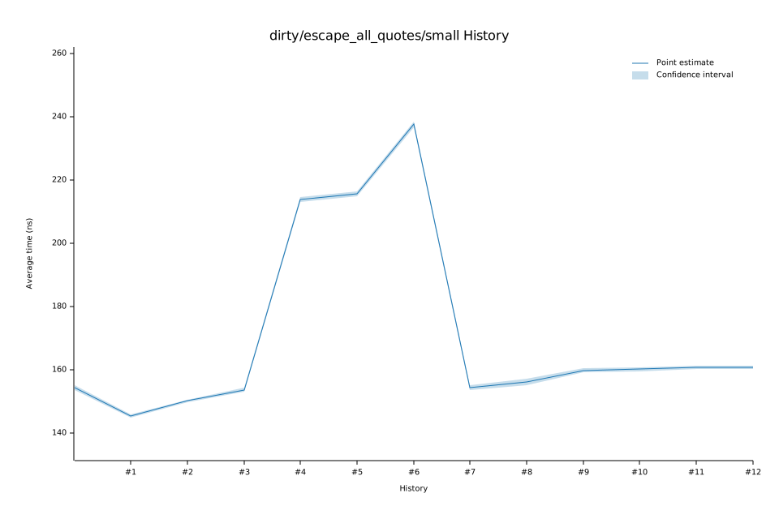

# 62023-01-13T17:13:29-08:00
|
Lower Bound |
Estimate |
Upper Bound |
| Value: |
236.71ns |
237.59ns |
238.50ns |
| Throughput: |
181.30MiB/s |
180.63MiB/s |
179.94MiB/s |
| Change in Value: |
+9.8310% |
+10.872% |
+11.893% |
| Change in Throughput: |
-8.9510% |
-9.8060% |
-10.629% |
No change in performance detected.
# 52023-01-13T17:08:16-08:00
|
Lower Bound |
Estimate |
Upper Bound |
| Value: |
214.87ns |
215.62ns |
216.39ns |
| Throughput: |
199.72MiB/s |
199.03MiB/s |
198.32MiB/s |
| Change in Value: |
-0.3804% |
+0.4798% |
+1.3529% |
| Change in Throughput: |
+0.3818% |
-0.4775% |
-1.3348% |
Change within noise threshold.
# 42023-01-13T17:02:55-08:00
|
Lower Bound |
Estimate |
Upper Bound |
| Value: |
212.91ns |
213.76ns |
214.63ns |
| Throughput: |
201.57MiB/s |
200.77MiB/s |
199.95MiB/s |
| Change in Value: |
+37.806% |
+39.142% |
+40.423% |
| Change in Throughput: |
-27.434% |
-28.131% |
-28.786% |
No change in performance detected.
# 32023-01-13T16:59:29-08:00
|
Lower Bound |
Estimate |
Upper Bound |
| Value: |
153.02ns |
153.62ns |
154.25ns |
| Throughput: |
280.46MiB/s |
279.36MiB/s |
278.22MiB/s |
| Change in Value: |
+1.8942% |
+2.9693% |
+3.9423% |
| Change in Throughput: |
-1.8590% |
-2.8836% |
-3.7928% |
No change in performance detected.
# 22023-01-13T16:57:30-08:00
|
Lower Bound |
Estimate |
Upper Bound |
| Value: |
149.69ns |
150.14ns |
150.60ns |
| Throughput: |
286.69MiB/s |
285.84MiB/s |
284.95MiB/s |
| Change in Value: |
+1.3510% |
+2.5155% |
+3.6385% |
| Change in Throughput: |
-1.3330% |
-2.4538% |
-3.5108% |
No change in performance detected.
# 12023-01-13T16:55:30-08:00
|
Lower Bound |
Estimate |
Upper Bound |
| Value: |
144.83ns |
145.30ns |
145.76ns |
| Throughput: |
296.32MiB/s |
295.37MiB/s |
294.42MiB/s |
| Change in Value: |
-6.2574% |
-5.3494% |
-4.1599% |
| Change in Throughput: |
+6.6751% |
+5.6517% |
+4.3405% |
No change in performance detected.
# 02023-01-13T16:53:34-08:00
|
Lower Bound |
Estimate |
Upper Bound |
| Value: |
153.62ns |
154.33ns |
155.03ns |
| Throughput: |
279.37MiB/s |
278.08MiB/s |
276.82MiB/s |